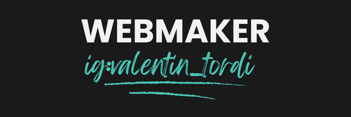

#YoProgramo


Me llamo Valentin Tordi y soy Full Stack Developer Jr. Tambien cuento con un nivel de ingles medio
Actualmente no cuento con mucha experiencia laboral en este campo. Pero he trabajado como ayudante en la Asociación Corredores Turismo Carretera durante dos semanas y me di cuenta de que me adapto a todo tipo de trabajo.
En este trabajo temporal he aprendido a tratar con gente en un ambito laboral y arreglarmelas por mi cuenta para resolver distintos problemas.
//poner logo del actc
Realice ambos cursos de argentina programa #YoProgramo y #SeProgramar y un curso de desarrollo web dictado por Junior Achievement Argentina.
//Tengo que detallar mas que hize en cada parte y ver si puedo poner logos
Realice un curso de armado y reparacion de computadoras dictado en la localidad de Viedma. En el mismo pude aprender los componentes que contiene una computadora, el funcionamiento de cada uno, como limpiar los mismos e instalar sistemas operativos.
Estoy en el segundo año de la carrera de lincenciatura en sistemas de la universidad nacional de Rio Negro
Actualmente estoy estudiando idiomas y cuento con un nivel intermendio de ingles y un nivel basico/principiante del idioma japones.